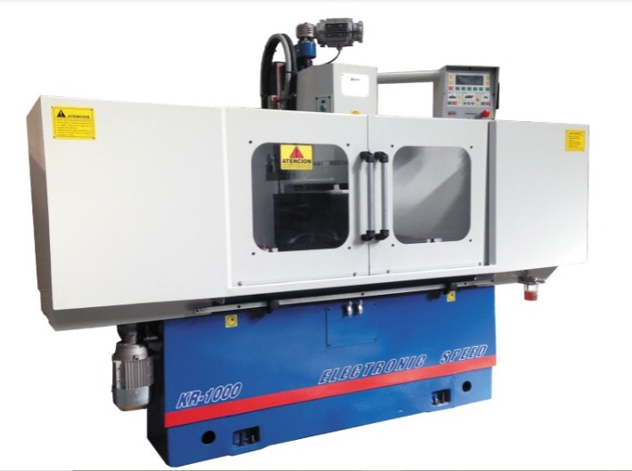
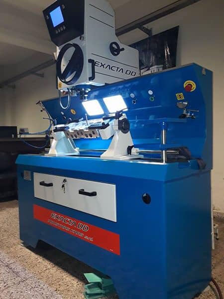

INICIO
NOSOTROS
MAQUINARIAS
CONTACTO
A CONTINUACIÓN LES MOSTRAMOS ALGUNOS DE NUESTROS EQUIPOS DE TRABAJO

KR-1500 ES UNA RECTIFICADORA / FRESADORA DE SUPERFICIES PLANAS, LA MISMA ESTÁ FABRICADA SIGUIENDO LOS MÁS ALTOS STANDARES DE CALIDAD

EXACTA DD / ALESADORA DE ASIENTOS DE VÁLVULAS DE CABEZAL FLOTANTE

BERCO / MAQUINA DE RECTIFICAR CIGUEÑALES
EN NUESTRAS REDES SOCIALES MOSTRAMOS TRABAJOS REALIZADOS Y EL FUNCIONAMIENTOS DE LAS MAQUINAS, LOS ESPERAMOS!!